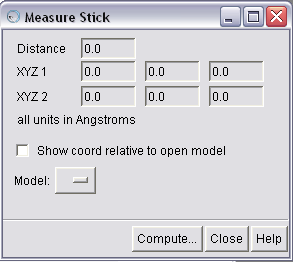

The Measure Stick module is available as a part of Segment Volume package. The module is a Chimera extension module. You will need the Chimera software package to use this module. The module interacts with Volume Path, a Chimera module for marker sets in Chimera.
Measure Stick uses Chimera's VolumePath marker sets (see Volume Path module in Chimera) and measures the distance of a link between two markers, and the location of the markers itself.
Note: This version of the Segment Volume package is a pre-release version.
The module files are stored in the directory MeasureStick. To list the module under Chimera's Tools menu, add the directory - containing - the MeasureStick directory to Chimera's list of Tools.
To do so, open Chimera's main window, choose Perferences under Favorites menu, then choose the Tools category and then Add the directory - containing - the MeasureStick directory. This will list the tool under AIRS on the Tools menu.
To start the module from the Chimera menu, first you will need to ensure that the module is listed under Chimera's Tools menu. Then, click on Measure Stick in the AIRS menu, under Chimera's Tools menu.
Alternatively, you can use the command line tool in Chimera's IDLE tool (under Programming tools on the Tools menu), and type:
>>> import MeasureStick
>>> MeasureStick.show_simple_distance_dialog()

The Measure Stick dialog gives the parameters of the marker set link: distance, location of marker 1, and locaiton of marker 2.
The coordinates of the markers of the link can be measured relative to the marker set model or to any open model on the Models menu. To measure relative to a model check the box for Show coord relative to open model, and then pick the open model on the menu.
To compute the distance, press the Compute button.
The Close button closes the Measure Stick dialog. The Help button opens this help page.
If more than one link from the marker set(s) is selected, then the parmeters are computed for the first selected link. The markers that form the link are labelled 1 and 2. These labels appear ONLY IF there are no pre-exisitng labels.